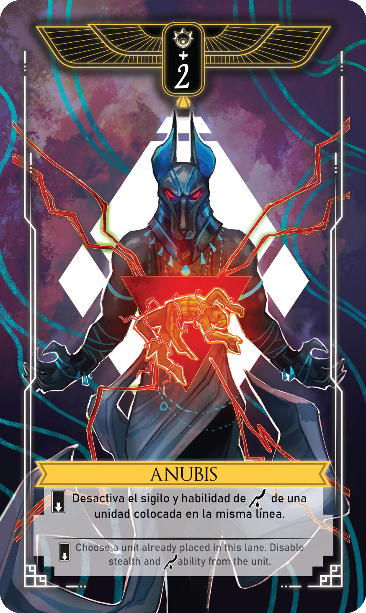
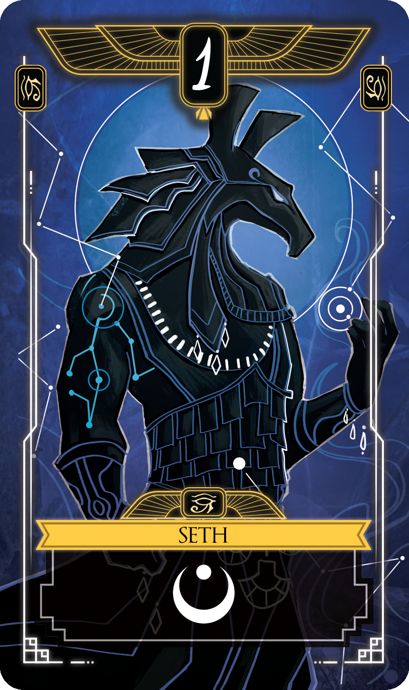
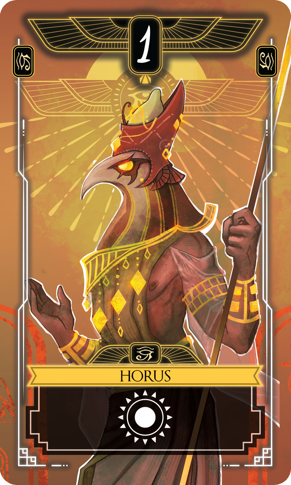
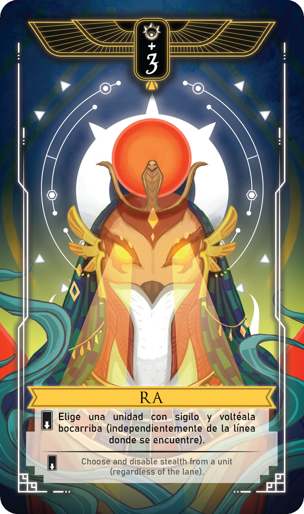
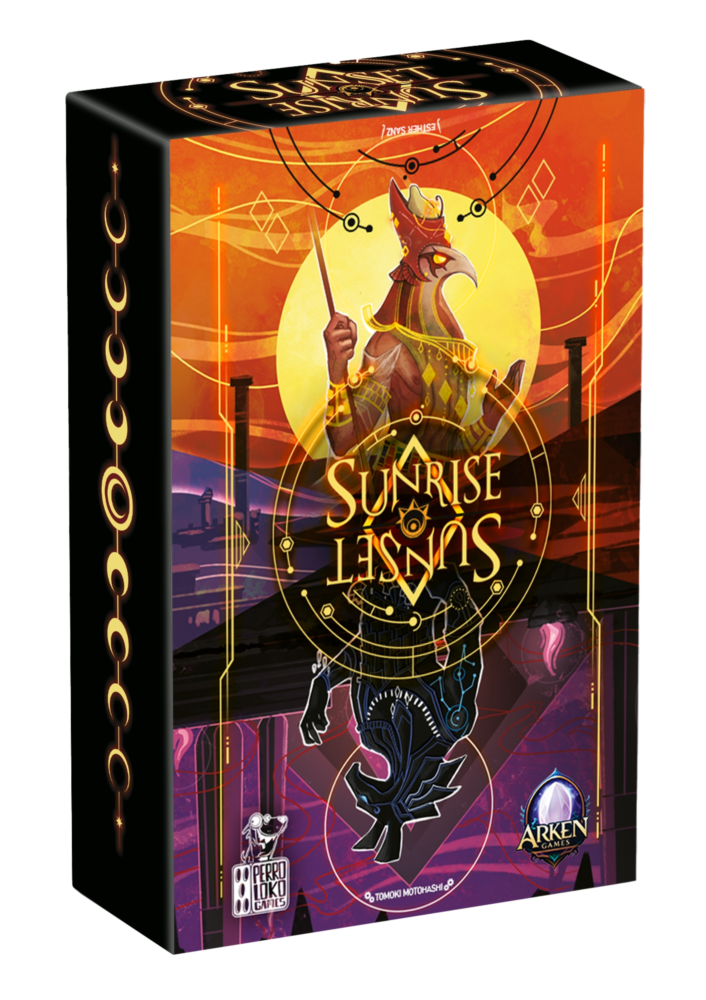

- 2 Jugadores
- 10-30 Minutos
- 8+ Años
En Sunrise Sunset dos dioses se enfrentan por el control del ciclo solar.
Dos jugadores se baten en duelo: uno encarna a Horus, dios de la luz y del cielo, y el otro a Seth, dios de la oscuridad y el caos. El combate se desarrolla en tres escenarios —el mundo de los vivos (Deshret), el inframundo (Duat) y la Barca Solar (Mandjet)—, que representan las distintas fases del viaje del Sol.
Por turnos, cada jugador coloca cartas en una de las tres ubicaciones hasta completar dos por lado en cada una, formando un total de 12 cartas en juego. Al finalizar, se resuelven los combates: ganar otorga el control de una zona, y si ya la dominabas, infligís un punto de daño al rival. La partida termina cuando un jugador logra causar tres puntos de daño y se proclama vencedor.
Las cartas poseen distintos poderes y habilidades; algunas incluso se juegan bocabajo, ocultando tu estrategia y añadiendo tensión al enfrentamiento. Conocer a fondo cada carta te permitirá anticipar jugadas y tomar mejores decisiones. El reglamento incluye un resumen de habilidades para facilitar el seguimiento durante la partida.




- ¿Por qué elegir Sunrise Sunset? -
Porque combina elegancia, estrategia y accesibilidad en una experiencia compacta para dos jugadores. Sus cartas con habilidades únicas permiten ocultar estrategias y sorprender al oponente, generando partidas donde cada movimiento importa.
Su ritmo ágil, su alta rejugabilidad y su cuidada producción visual lo convierten en un título ideal tanto para quienes buscan duelos intensos en poco tiempo como para parejas o grupos que disfrutan juegos tácticos y fáciles de aprender.
Un duelo en Sunrise Sunset es ágil, profundo y lleno de tensión, con partidas rápidas que invitan a la revancha y una variedad estratégica que garantiza una experiencia distinta en cada encuentro.
- Componentes -
-
3 cartas de ubicación (Deshret, Duat y Barca Solar)
-
13 Cartas de unidad
-
2 Cartas de dios personal (Horus y Seth)
-
4 Contadores de daño
